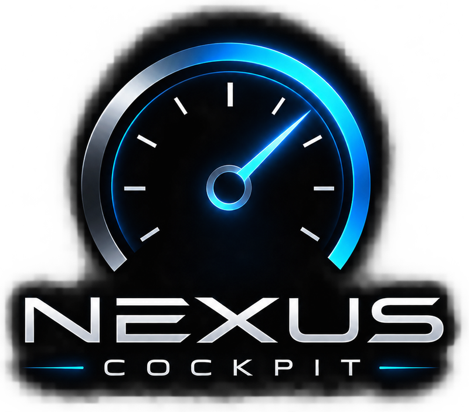
PARA QUEM LEVA O SIMULADOR A SÉRIO
O painel do seu caminhão,
no celular ou tablet.
Para Euro Truck Simulator 2 e American Truck Simulator. Painéis no estilo do SimHub, Button Box touch, lembretes de manutenção do caminhão e troca de páginas pelo volante. Feito por quem joga, para deixar a experiência mais real.
Grátis · Instale o programa no PC. No Android use o app; no iPhone e iPad abre direto no Safari, no mesmo Wi-Fi.
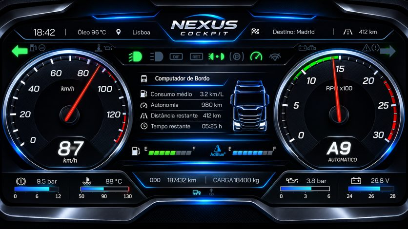
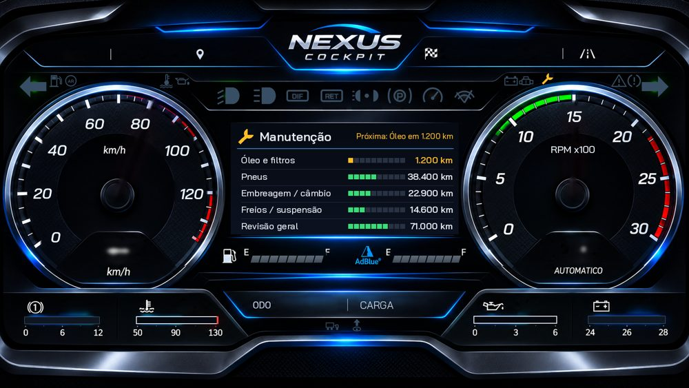
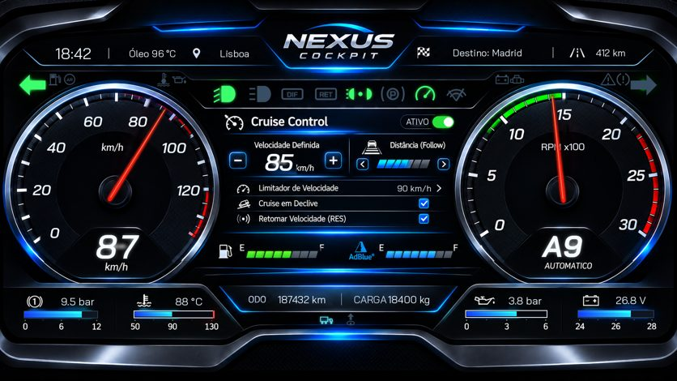
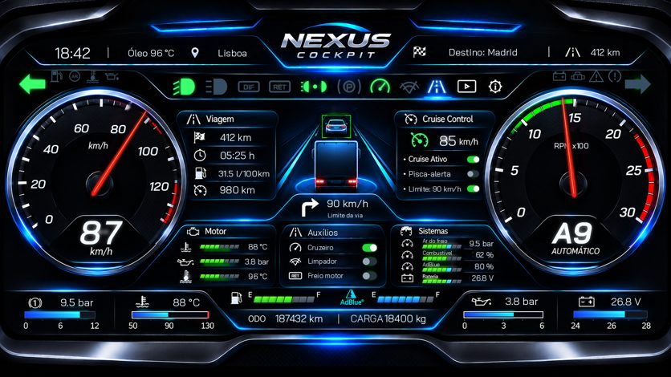
Recursos
Tudo que o app faz com os dados oficiais do jogo.
Painéis do SimHub
Velocímetro, conta-giros, luzes e avisos com os mesmos visuais e fórmulas dos painéis do SimHub.
Button Box touch
Botões no celular que apertam as teclas do jogo de verdade: faróis, setas, motor, freios, cruise control e muito mais.
Manutenção do caminhão
Troca de óleo, pneus, embreagem, freios e revisão pelo hodômetro real. Consertar na oficina do jogo registra sozinho.
Avisos por voz
O PC avisa quando a manutenção está chegando, mesmo com o jogo em tela cheia.
Botões do volante
Troque as páginas do painel pelo volante, joystick ou teclado — até 128 botões.
Painéis da comunidade
Baixe novos painéis direto no app, com aviso quando houver atualização.
Conta opcional
Entre com Google ou e-mail para participar da comunidade. O app funciona sem login.
Button Box NOVO
Transforme o celular ou tablet num painel de botões do caminhão. Cada toque aperta a tecla certa no jogo, pelo próprio plugin do PC — sem programa extra.
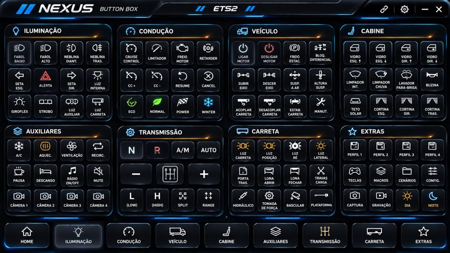
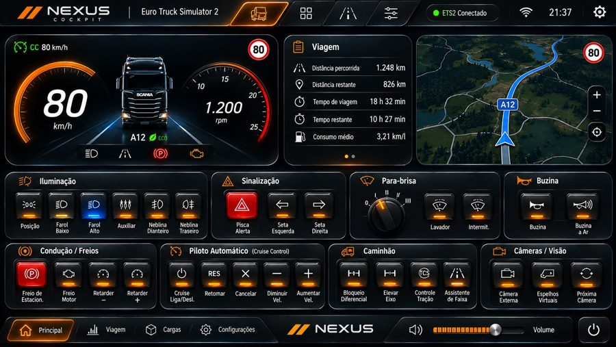
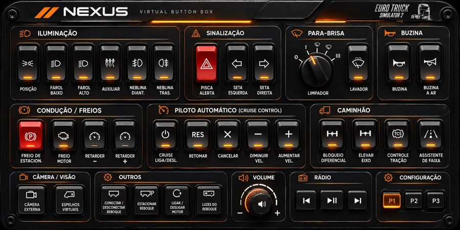
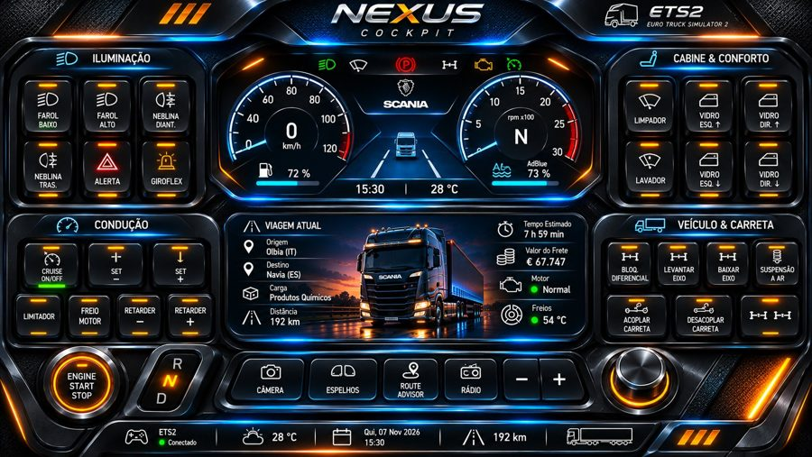
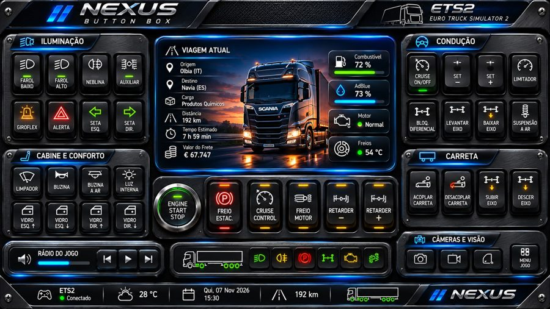
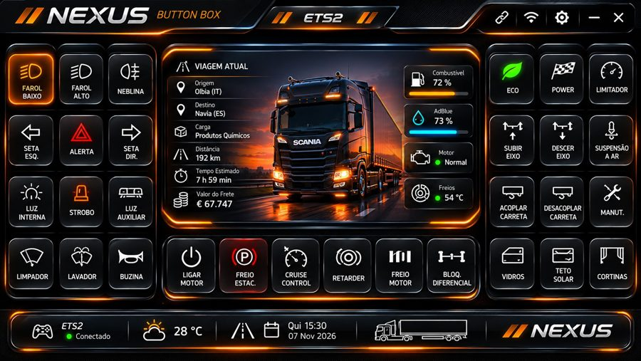
6 modelos
Vários visuais, alguns com mais de uma página. Troque de página pelas abas ou pelo logo.
Teclas do ETS2
Já vem com as teclas padrão do jogo. As outras funções você liga em Opções › Controles tocando o botão.
Toque ou segure
Buzina, vidros e volume funcionam enquanto você segura. Perfis P1–P4 guardam teclas diferentes.
Como instalar
Leva uns 2 minutos.
- No PC, com o jogo fechado: abra o NexusCockpit_Setup.exe e clique em Avançar → Instalar → Concluir. Ele encontra o ETS2 e o ATS sozinho. Se o Windows mostrar “O Windows protegeu o computador”, clique em Mais informações → Executar assim mesmo.
- No celular ou tablet Android: instale o NexusCockpit.apk (se pedir, permita “instalar apps desta fonte”).
- Abra o jogo: clique OK no aviso do SDK. Se o Windows perguntar sobre o firewall, permita em “Redes privadas”.
- Abra o app com o PC e o celular no mesmo Wi-Fi. Ele encontra o PC sozinho — é só dirigir.
iPhone e iPad NOVO
Sem App Store e sem instalar nada no iPhone: o painel abre direto no Safari.
- No PC: instale o NexusCockpit_Setup.exe e abra o programa Nexus Cockpit (atalho na Área de Trabalho). Toque em “Gerar código QR”: aparece o endereço do painel na sua rede (ex.: http://192.168.0.10:31415) e o QR code.
- No iPhone ou iPad: aponte a câmera para o QR code, ou digite o endereço no Safari, com o aparelho no mesmo Wi-Fi do PC.
- Deixe com cara de app: toque em Compartilhar → Adicionar à Tela de Início. O Nexus Cockpit ganha ícone e abre em tela cheia.
Funciona também em tablets Android antigos e em qualquer aparelho com navegador.